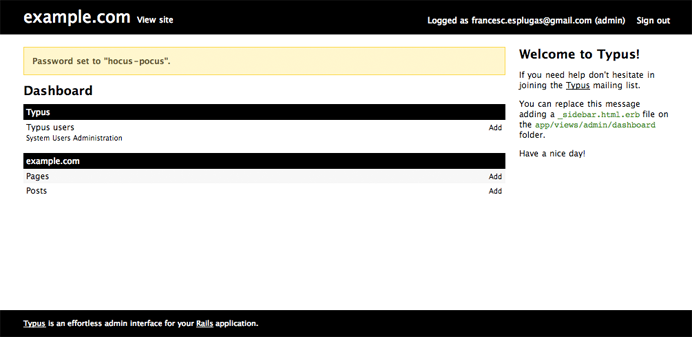

What is Typus?
A few years ago I developed websites using Movable Type, Drupal, TextPattern and b2, which later became Wordpress. I decided to stop using all those content management systems and started to develop web applications with Ruby on Rails.
Inspired by the tools I used, and with a simple idea "Trusted users editing structured content", I started to develop a Rails application to manage the sites I was building. This was the first attempt to make a simple but powerful content management system. I adapted that application to many projects, but I decided to extract the core functionality as a plugin which is now known a Typus.

On December 2007, Typus was released under a MIT License. A lot of feedback, ideas, contributions & donations are making the plugin better everyday.
Typus Key Features
- Access control by users and roles.
- CRUD and custom actions for your models on a clean interface.
- Internationalized interface.
- Extensible and overwritable templates.
- Low memory footprint.
Impatients to see it working?
A demo is running at Heroku. Use the following credentials to log in.
Email: user@intraducibles.com
Password: columbia
Want to quickly create an application on your development machine?
Note that Git & Rails are required to make the application work.
Step 1: Create a Rails application using a template.
$ rails example.com -m http://gist.github.com/86613.txt
Step 2: Start the server.
$ cd example.com && script/server
Step 3: Go to the admin area.
http://0.0.0.0:3000/admin